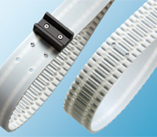

Produkte
zurück
Produkt
Details
Anwendung
optibelt
ALPHA ATC

Der Anwender des ATC-Systems kann Aufschraubnocken schnell und einfach über jedem beliebigen Zahn frei wählbar vor Ort montieren. Beim ATC-System wird zum Verschrauben der Aufschraubnocke ein ATC-Einlegeteil in die vorbereitete Aussparung im Zahn gelegt. Diese Aussparungen sind im Optibelt ALPHA V Zahnriemen im Profil ATC10 durchgängig in allen Zähnen vorhanden.
ATC-Einlegeteile ermöglichen zudem das direkte Anschrauben von z.B. hochpräzisen Werkstückträgern aus Metall ohne aufgeschweißte, eigens gefertigte Nocken mit Einlegeteilen. Aufschraubnocken können außerdem im Vergleich zu unlösbar verbundenen Nocken höhere Kräfte übertragen. Zudem ist der Mindestscheibendurchmesser bei gleicher Befestigungsstärke im Vergleich kleiner wählbar. Aufschraubnocken für das ATC-System sind auf Anfrage erhältlich.
Vorteile und serienmäßige Eigenschaften
individuelle Nockenpositionierung vor Ort
über jedem beliebigen Zahn positionierbar
lösbare Verbindung, demontierbar für Austausch verschlissener Nocken, Wechsel der Nockenform
verdrehsichere Steg-Nocken-Verbindung
hohe Stabilität durch Steg-Clip-Mechanismus
schnelle und einfache Montage
kompatible Anschlussmaße Clip/Nocken
Einsatz vorhandener Nocken möglich
schnelle Lochung des Rückens durch
ATC-Lochwerkzeug oder ATC-Lochzange
Downloads
Optibelt
Produktbroschüre
deutsch